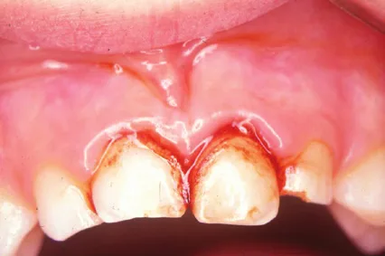
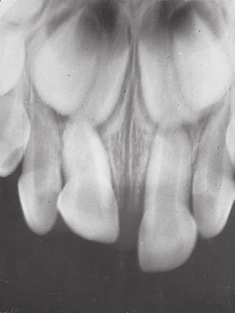

نسخه استخراجشده؛ ترجمه یا تأیید علمی انجام نشده است. وضعیت: captured
کانکاشن — بدون لقی، بدون جابهجایی. فقط حساسیت به دق.
سابلوکسیشن — لقی دارد ولی جابهجا نشده. اغلب خونریزی از سولکوس دیده میشود.
اکستروژن — تا حدی از حفره بیرون آمده. لقی زیاد.
لترال لوکسیشن — جابهجا شده و در استخوان قفل شده.
و اینجا اشتباه رایج پیش میآید: در لترال لوکسیشن دندان اغلب لق نیست، چون در استخوان گیر کرده. نبود لقی را با نبود آسیب اشتباه نگیر — صدای دق هم اینجا فلزی میشود. در اینتروژن هم دندان به همین دلیل لق نیست.

اینتروژن — دندان به داخل استخوان فرو رفته. در دندان شیری، پرسش مهم برای پیشآگهی دندان دائمی این است: به کدام سمت فرو رفته؟
نوک ریشه به سمت لبیال (دور از جوانهی دائمی) ← خطر کمتر، نوک ریشه به سمت پالاتال (به سمت جوانه) ← خطر مستقیم برای دندان دائمی. خوشبختانه در بیشتر موارد (بیش از ۸۰٪) نوک ریشه به سمت لبیال میرود.
درمان اما به جهت بستگی ندارد: دندان شیری فرورفته را، به هر سمتی که رفته باشد، رها کن تا خودبهخود دوباره بروید. رویش دوباره معمولاً دو تا چهار هفته پس از حادثه آغاز میشود و بیشتر دندانها تا حدود شش ماه جا میافتند؛ گاهی تا یک سال طول میکشد. کشیدن فوری دندانی که به سمت جوانه رفته دیگر توصیه نمیشود: این دندانها هم اغلب خودبهخود دوباره میرویند، خودِ کشیدن ممکن است به جوانه آسیب بیشتری بزند، و شاهدی نیست که کشیدن فوری آسیب جوانه را کم کند. کودک را ظرف چند روز به تیمی که در ترومای کودکان باتجربه است ارجاع بده و پس از یک هفته، شش تا هشت هفته، شش ماه و یک سال برای نکروز پالپ و عفونت معاینه کن؛ در اینتروژن شدید، معاینهی ششسالگی رویش دندان دائمی را هم میسنجد.
تعیین جهت با رادیوگرافی انجام میشود؛ نمای بالینی بهتنهایی گمراهکننده است. اگر نوک ریشه به سمت صفحهی استخوانی لبیال یا از میان آن رفته، نوک در تصویر دیده میشود و دندان از قرینهاش کوتاهتر است؛ اگر به سمت جوانه رفته، نوک دیده نمیشود و دندان بلندتر از قرینهاش است. جهت را در پرونده ثبت کن و به والدین بگو، چون خطر برای دندان دائمی را نشان میدهد.
لترال لوکسیشن دندان شیری هم همین منطق را دارد: اگر تداخل اکلوزالی کم است یا نیست، دندان خودبهخود جا میافتد. در جابهجایی شدید، با بیحسی یا دندان را بهآرامی جا بینداز (و اگر ناپایدار ماند، چهار هفته اسپلینت انعطافپذیر)، یا اگر خطر بلع یا آسپیراسیون دندان هست، آن را بکش.
آولژن — دندان کاملاً از حفره خارج شده. و یک قاعدهی روشن: دندان شیری آولسه ریایمپلنت نمیشود — خطر آسیب به جوانهی دائمی حین جاگذاری بر منفعت آن میچربد. اگر دندان پیدا نشد، احتمال آسپیراسیون را جدی بگیر و کودک را برای بررسی به پزشک ارجاع بده.
